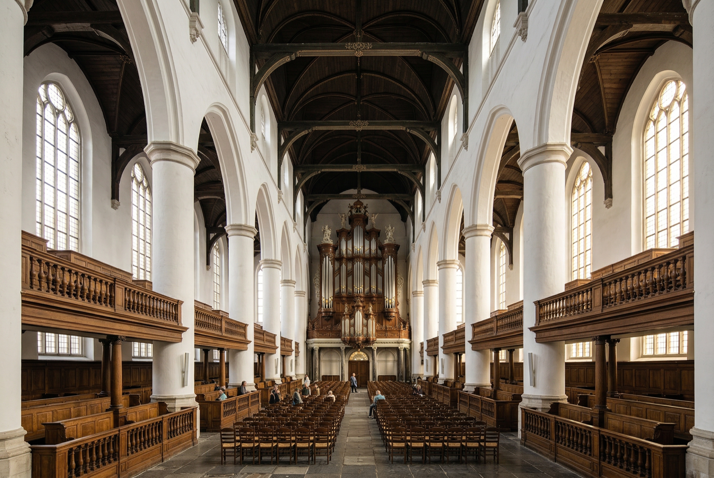

Begijnhof
A 14th-century enclosed courtyard hidden off a busy shopping street. You walk through a door in a wall and the city vanishes. Silence is requested and genuinely observed. The resident community still lives here.
Amsterdam's oldest surviving wooden house (built around 1420) is here. There are two small chapels; one of the only places in the city where Catholicism was practiced openly during the Reformation, hidden inside what looked from outside like a private house.
Allow 30–45 minutes. Genuinely one of the best free things in Amsterdam. Combine it with a walk through the Jordaan on the same afternoon.

Westerkerk
Amsterdam's largest Protestant church (1631), with the city's highest tower at 85 meters. Rembrandt is buried somewhere inside; the exact grave was lost, but there's a memorial. The tower climb gives the best views over the canal ring; check westerkerk.nl for opening times.
The church carillon plays every 15 minutes. Standing on the Prinsengracht and hearing the bells ring while a canal boat passes below is one of those Amsterdam moments that stays with you.
Oude Kerk — Amsterdam's oldest building (1306)
The Oude Kerk (Old Church) is the oldest building in Amsterdam, sitting in the middle of the red-light district, an unusual juxtaposition. The church itself is simple, soaring Gothic stone with beautiful stained glass. It now doubles as an art gallery and concert venue, so check what's on during your visit. Entry around €15. Ten minutes by tram from the apartment.
Nieuwe Kerk — Dam Square
On Dam Square next to the Royal Palace. The Nieuwe Kerk (New Church, 1408) no longer holds regular services; it hosts temporary exhibitions instead. Worth looking inside if you're passing Dam Square. Often free to enter the outer church area, exhibitions are ticketed.

Ons' Lieve Heer op Solder — a church in an attic
A Catholic church hidden inside a 17th-century canal house, built when Catholic worship was prohibited. Three floors of a regular-looking house lead to a fully functioning baroque church at the top. One of Amsterdam's most extraordinary hidden spaces.
Calm corners for Edie
Places in the city that are gentle, beautiful, and easy to leave when needed.

Rijksmuseum Gardens
The Rijksmuseum's rear garden is freely accessible and beautiful in May: tulips and spring flowers in the formal beds, with the museum's Gothic façade as backdrop. A quiet bench here after a Rijksmuseum visit is a good way to let Edie decompress in the open air.
Oosterdok 143, near Centraal Station. The OBA is one of Amsterdam's great buildings: seven floors of open reading areas with floor-to-ceiling windows over the city. The rooftop café is especially lovely. Free to enter, no card needed. Good option for a rainy afternoon when the group wants to split up.
Reguliersgracht: One of Amsterdam's most beautiful canals, quieter than the main tourist routes. Good bench-sitting spots with views down seven bridges in a row at certain angles. Herengracht: The grandest of the canal ring streets: wide, tree-lined, dignified. Less foot traffic than Prinsengracht. An evening walk here with coffee from a nearby café is one of the better ways to spend an hour in Amsterdam.